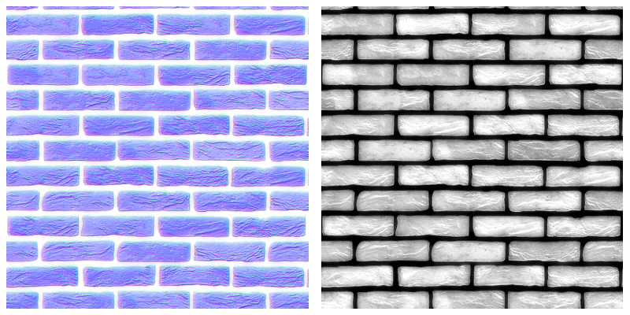
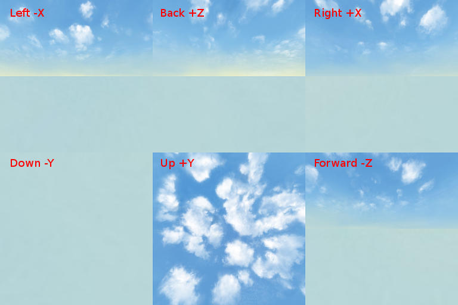

Текстуры¶
Содержание
- Текстуры
- Типы текстур
- Общие настройки
- Диффузная текстура (diffuse map)
- Карта бликов (specular map)
- Карта нормалей (normal map)
- Карта высот (height map). Parallax mapping
- Карта смешивания (stencil map)
- Видео-текстуры
- Карта окружения (environment map)
- Карта зеркального отражения (mirror map)
- Текстура неба (skydome)
- Особые типы текстур
Текстуры - подготовленные вручную или процедурно сгенерированные изображения, накладываемые на поверхность моделей с целью их детализации. Для соотнесения точек 3D поверхности и пикселей плоского изображения, как правило, используются текстурные развертки. По этой причине текстуры иногда называют картами.
Текстуры обычно помещаются в текстурные слоты материалов, также возможно их использование для параметризации систем частиц и визуализации небесного свода.
Типы текстур¶
Опция выбора типа текстуры Type расположена во вкладке Textures. Движком поддерживаются текстуры следующих типов:
Image or Movie, изображение или фильмВ этом случае текстура задаётся с помощью растрового изображения или видеофайла. Поддерживаются следующие графические форматы:
.PNG.JPG
Может использоваться в следующих случаях:
карта бликов (specular map), может также содержаться в альфа-канале диффузной текстуры
карта высот (height map), может содержаться только в альфа-канале карты нормалей, используется для реализации рельефной поверхности (parallax mapping)
Environment Map, карта окруженияиспользуется для реализации одной из методик освещения от окружающей среды
None, пустаяприменена на кубе в стартовой сцене Blender’a. Также используется для рендеринга сцены в текстуру, а также для рендеринга canvas-текстуры.
Blend, градиентиспользуется в системах частиц
Общие настройки¶
- Размер
Размер растров для текстур-изображений (длина и ширина изображения в пикселах) должен быть числом 2N, т.е. 4, 8, 16, 32, 64, 128, 256, 512, 1024, 2048, 4096 пикселов. Использование текстур других размеров (т.н. NPOT) поддерживается, но не рекомендуется. Для корректной работы компрессии текстур размер должен составлять не менее 4 пикселов. Как правило, используются изображения квадратной формы (например, 512 x 512 px), однако могут использоваться и прямоугольные (например, 4 x 128 px). Использование изображений размером более 2048 пикселов не рекомендуется.
- Image Mapping > Extension
Режим интерпретации текстурных координат (в WebGL - Wrap Mode). Доступен для текстур типа
Image or Movie. В случае значенияRepeatдвижок устанавливает для текстуры режимREPEAT. При этом целочисленная часть текстурных координат игнорируется, используется только дробная часть. Во всех остальных случаях (например,Extend) движок устанавливаетCLAMP_TO_EDGE. При этом происходит ограничение текстурных координат отрезком [0, 1]. Значение по умолчаниюRepeat.
- Mapping > Coordinates
Тип текстурных координат. Поддерживаются
UV(использовать развертку),Normal(использовать направление на камеру, только для диффузных текстур, применяется для создания материалов в стиле material capture, matcap) иGenerated(исходные недеформированные координаты объекта). Значение по умолчаниюGenerated.- Mapping > Size
Масштабирование развертки по соответствующим осям. Значения по умолчанию 1.0.
- Export Options > Do Not Export
Не экспортировать текстуру.
- Export Options > Disable Compression
Отключить использование текстурной компрессии (т.е. формата текстур
DDS) для данной текстуры. Применяется в случае, когда компрессия приводит к ухудшению качества изображения. В частности, рекомендуется отключать для текстур-масок, использующихся для смешивания различных характеристик материалов.- Export Options > Shore Distance Map
Используется в рендеринге наружных сцен.
- Export Options > Anisotropic Filtering
Фактор анизотропной фильтрации для индивидуальной текстуры. Имеет приоритет перед аналогичной настройкой для сцены. Значение по умолчанию
DEFAULT(т.е. использовать настройки сцены).- Water Foam
Текстура пены. Используется материалом для рендеринга воды.
Примечание
Для карт нормалей текстурная компрессия не применяется.
Диффузная текстура (diffuse map)¶
Диффузная текстура применяется для указания распределения цвета рассеянного света (модель Ламберта).
Активация¶
Выставить опцию Diffuse > Color на панели Textures > Influence.
Дополнительные настройки¶
- Influence > Diffuse > Color
Степень влияния текстуры на диффузный цвет. Значение по умолчанию 1.0.
- Influence > Blend
Тип взаимодействия с цветом материала (
Material > Diffuse > Color), или с вертексным цветом, если включена опцияVertex Color Paint. ПоддерживаютсяMix(смешивается с цветом),Multiply(умножается на цвет). Значение по умолчаниюMix.
Карта бликов (specular map)¶
Карта бликов применяется для указания распределения цвета отраженного света (модель Фонга).
Активация¶
Выставить опцию Specular > Color на панели Textures > Influence.
Дополнительные настройки¶
- Influence > Specular > Color
Степень влияния текстуры на цвет отраженного света. Значение по умолчанию 1.0.
- Influence > Blend
Тип взаимодействия с цветом отраженного света материала (
Material > Specular > Color). Поддерживается толькоMix(смешивается с цветом). Значение по умолчаниюMix.
Карта бликов может быть упакована в альфа-канал диффузной текстуры в целях оптимизации. В этом случае для текстуры необходимо одновременно выставить опции Diffuse > Color и Specular > Color. Цветовой диапазон ограничен оттенками серого цвета.
Карта нормалей (normal map)¶
Карта нормалей применяется для указания распределения нормалей (перпендикуляров) к поверхности с целью увеличения уровня детализации ее рельефа. Информация о нормалях должна храниться в текстурном пространстве координат. Карты нормалей в объектном пространстве не поддерживаются.
Активация¶
Выставить параметр Image > Color Space в значение Non-Color.
Выставить опцию Geometry > Normal на панели Textures > Influence.
Дополнительные настройки¶
- Influence > Geometry > Normal
Степень участия карты в расчетах нормалей. Значение по умолчанию 1.0.
Карта высот (height map). Parallax mapping¶
Карта высот содержит информацию о распределении относительных высот рельефа. Более высокий уровень поверхности обозначается более светлым цветом. Карта высот в сочетании с картой нормалей требуются в качестве входящих данных для реализации рельефной поверхности (parallax mapping). Карта высот должна содержатся в альфа-канале карты нормалей.
Активация¶
Для карты нормалей дополнительно к опции Geometry > Normal активировать панель Parallax.
Дополнительные настройки¶
- Parallax > Parallax Scale
Фактор влияния эффекта рельефной поверхности. Значение по умолчанию 0.03.
- Parallax > Parallax Steps
Количество итераций в расчетах рельефной поверхности. Большее значение приводит к лучшему качеству и к большим затратам вычислительных ресурсов. Значение по умолчанию 10.
- Parallax > Parallax LOD distance
Расстояние на котором виден эффект параллакса.
Карта смешивания (stencil map)¶
Специальная текстура (цветная или оттенков серого), содержащая информацию о распределении других текстур по поверхности.
Активация¶
В случае нодовых материалов карта смешивания должна использоваться соответствующим образом в нодовой структуре.
В случае обычных материалов карта смешивания должна располагаться в текстурном слоте между двумя смешиваемыми диффузными текстурами. Для текстуры смешивания необходимо одновременно выставить опции
RGB to IntensityиStencilна панелиTextures > Influence.
Дополнительные настройки¶
В случае обычных материалов для одной из смешиваемых диффузных текстур поддерживается тип текстурных координат Normal (“matcap”).
Ограничения¶
В случае обычных материалов движком интерпретируется только красный канал текстуры смешивания. Карта бликов или карта нормалей при их наличии смешиванию не подвергаются. Настройка масштабирования Mapping > Size извлекается из первой текстуры и применяется ко всем остальным текстурам.

{kind=link}
{kind=link}
{kind=link}
Видео-текстуры¶
В качестве текстуры может применяться видеозапись. Для этого должен быть выбран тип текстуры Image or Movie.
Примечание
Видеотекстура поддерживает только воспроизведение видеоряда. Звуковое сопровождение следует накладывать, используя объект типа SPEAKER.
Поддерживаемые форматы (контейнеры):¶
webm, кодек VP8 (Chrome, Firefox)
m4v, кодек H.264 (Chrome, Safari, IE)
ogv, кодек Theora (Chrome, Firefox)
В качестве базового формата рекомендуется использовать WebM, который является открытым стандартом, поддерживается многими браузерами, обеспечивает хорошее качество изображения.
Примечание
Файлы в форматах mp4 и ogg имеют различное расширение для звуковой и видео-информации: расширения .mp4 и .ogg используются для звуков, .m4v и .ogv - для видео.
Конвертация ресурсов в различные форматы описывается в соответствующем разделе.
Настройка текстуры¶
При использовании видео-текстуры можно настроить следующие опции на панели Texture > Image:
- Image > Frames
Длина воспроизводимого фрагмента видеозаписи в кадрах.
- Image > Offset
Номер кадра, с которого будет начинаться воспроизведение видеозаписи.
- Image > Cyclic
Начинать воспроизводить видеозапись заново каждый раз после ее завершения.
- Image > Allow NLA
Воспроизводить текстуру в рамках NLA-сценария. Необходимо также включить NLA глобально на сцене, активировав панель
Scene > NLA. По умолчанию включено.
Для текстур, управляемых через NLA будет актуальна следующая опция:
- Image > Start
Задержка воспроизведения видеозаписи в кадрах при использовании нелинейной анимации.
Для текстур, управляемых не через NLA будет актуальна следующая опция:
- Image > Auto Refresh
Воспроизводить видеозапись сразу после загрузки сцены.
Существует возможность ускоренного воспроизведения видеозаписей. Для этого необходимо задать значение свойства Scene > Dimensions > Frame rate отличным от значения fps (кадров в секунду) для видеозаписи. При этом скорость воспроизведения видеозаписи рассчитывается как отношение Frame rate сцены к fps видеозаписи.
Примечание
При использовании видео-текстур совместно с NLA кадры видео могут воспроизводиться не в точном соответствии со сделанными в Blender’е настройками. Возможно отставание видео в пределах 5-6 кадров, связанное с небольшой задержкой при старте/паузе тега <video>.
Особенности работы на мобильных устройствах¶
Присутствуют следующие особенности реализации на мобильных устройствах:
на iPhone используется специально разработанный видеоформат
.seq, потому что данное устройство открывает все стандартные видеозаписи через свой видеопроигрыватель. Видео надо сконвертировать заранее, используя наш конвертер.на некоторых мобильных устройствах имеется поддержка воспроизведения только одного видеофайла.
не гарантируется стабильная работа при выставлении опции
Offsetв ненулевое значение.не на всех устройствах поддерживается ускоренное воспроизведение видео.
на iPad и iPhone отсутствует возможность управления громкостью звука видеофайла, поэтому следует убрать аудио дорожку из видео перед добавлением файла в Blender.
Карта окружения (environment map)¶
Применяется в качестве карты зеркального отражения (mirror map), в качестве статической текстуры неба (skydome), а также для реализации одной из методик освещения от окружающей среды.
В движке представлена кубической текстурой. Растры для карт окружения должны содержать 6 спроецированных изображений окружающей среды, упакованных в 2 ряда по 3 (формат, используемый в Blender’e). Размер растров для каждого из изображений должен подчиняться правилу 2N (512, 1024 и т.п.).
Во избежание проявления швов рекомендуется использовать формат без потери качества (PNG).
{kind=link}
Создание карты окружения¶
Blender позволяет запекать сцену в карту окружения. Для этого:
Создать сцену для запекания.
Добавить пустой объект в предполагаемом центре обзора (
Add > Empty).Перейти во вкладку
World, затем перейти во вкладкуTextures, создать новую текстуру, выбрать типEnvironment Map.На панели
Environment Mapвыбрать источникStatic, выбрать созданный пустой объект в полеViewport Object, установить разрешение 2N (512, 1024 и т.п.).Выполнить рендеринг сцены
F12(требуется наличие камеры).Сохранить карту окружения в файл.

{kind=link}
Карта зеркального отражения (mirror map)¶
Применяется для визуализации отражающей способности поверхности. Представляет собой карту окружения.
Активация¶
Выбрать тип текстуры (Type) Environment Map. Выставить опцию Shading > Mirror на панели Textures > Influence.
Дополнительные настройки¶
- Influence > Shading > Mirror
Степень влияния карты зеркального отражения. Значение по умолчанию 1.0.
См.также
Текстура неба (skydome)¶
Применяется для визуализации бесконечно удаленного окружения (например, небесного свода). Представляет собой карту окружения.
Также может применяться для реализации одной из методик освещения от окружающей среды.
Активация¶
Создать текстуру мира (world texture) с типом “Environment Map”. Выбрать опцию Export Options > Sky Texture Usage > SKYDOME, предварительно выставив опцию World > Render Sky на вкладке World.
Примечание
Поведение текстуры приближено к поведению рендера в Blender Internal. Поэтому, при стандартных настройках текстуры, она может не отображаться. Для отображения текстуры активируйте флаг в панели текстуры Influence > Horizon и установите значение Horizon равное 1.0.
Примечание
Для имитации освещения от окружающей среды можно воспользоваться опцией Export Options > Sky Texture Usage > ENVIRONMENT_LIGHTING. При этом необходимо также выбрать соответствующую опцию в настройках мира: Environment Lighting > Sky Texture.
Для создания обоих эффектов от одной текстуры необходимо выставить опцию Export Options > Sky Texture Usage > BOTH.
{kind=link}
Дополнительные настройки¶
Движком поддерживаются параметры вкладки Influence для настройки отображения неба. Смешивание текстуры с цветом производится в зависимости от параметров World > Horizon Color (цвет горизонта) и World > Zenith Color (цвет зенита), а также флагов Paper Sky, Blend Sky и Real Sky. Поддерживаются все типы смешивания (Mix, Add, Multiply и т.д.).
Примечание
Параметры вкладки Influence влияют только на отображение неба. Они не влияют на отображение освещения от окружающей среды.
Особые типы текстур¶
Для использования особых типов текстур необходимо выставить тип текстуры None на панели Textures.
В меню Textures > Export Options имеется возможность задать основные свойства для данного типа текстуры:
- Export Options > Source Type
Выбор особого типа текстуры:
Scene- для рендеринга 3D сцены в текстуру,Canvas- использование HTML-элемента <canvas> иNone- отсутствие текстуры.- Export Options > Source ID
Имя сцены, которая будет отображена в текстуре, в случае 3D сцены либо идентификатор HTML-элемента <canvas> в случае Canvas-текстуры.
- Export Options > Source Size
Разрешение текстуры.
- Export Options > Extension
Режим интерпретации текстурных координат. Значение по умолчанию
Repeat.- Export Options > Enable Mipmapping
Включение MIP-текстурирования для Canvas-текстуры. По умолчанию включено.
Рендеринг в текстуру¶
Изображение 3D сцены может быть использовано в качестве текстуры на объекте другой (“главной”) сцены. Этот приём известен как “рендеринг в текстуру ”. Для того, чтобы использовать его, выполните следующие действия:
Создаёте новую сцену, которая будет использоваться для рендеринга в текстуру.
Для удобства переименуйте сцену.
Создайте для сцены группу настроек
World.Добавьте в сцену необходимые объекты.
Добавьте в сцену камеру и настройте её.
Затем переключитесь на главную сцену.
Выберите нужный вам объект и создайте для него UV-развёртку.
Создайте текстуру, которая будет использоваться для рендеринга.
Для этой текстуры выставьте тип
None.На панели
Mapping, установите параметрCoordinatesв значениеUV.В поле
Export Options > Source Typeуказать типScene.В поле
Export Options > Source IDуказать название сцены-источника.В поле
Export Options > Source Sizeуказать размер текстуры в пикселях.

Также поддерживается циклическое отображение сцен друг в друга.
Примечание
В проекте должна присутствовать хотя бы одна сцена, которую не отображают другие.
Canvas-текстуры¶
В качестве текстуры используется HTML-элемент <canvas>. Его редактирование осуществляется при помощи API.
В главной сцене для текстуры целевого объекта выставить тип None, в поле Export Options > Source Type указать тип Canvas. В поле Export Options > Source Size указать размер текстуры в пикселях.
Для работы с этими текстурами используется модуль textures. Пример работы с ним описан ниже.
var m_tex = require("textures");
...
var obj = m_scenes.get_object_by_name("NAME");
var ctx = m_tex.get_canvas_ctx(obj, "TEXTURE_NAME");
...
// operations with canvas context
...
m_tex.update_canvas_ctx(obj, "TEXTURE_NAME");
Для получения контекста используется функция get_canvas_ctx(), куда передается объект и имя текстуры, задаваемое в Blender. После преобразований с контекстом вызывается функция update_canvas_ctx(), которая осуществляет визуализацию изменений на указанном объекте, в указанной текстуре.
Примечание
Если в Blender на разных объектах была назначена одна и та же текстура типа Canvas, то и после загрузки в движке будет одна общая текстура, а не несколько уникальных. Результат работы с ней будет заметен на всех использующих её объектах. Это может быть полезно с точки зрения оптимизации. Если же требуется противоположное поведение, то следует назначить разные текстуры ещё в Blender, либо использовать глубокое копирование уже непосредственно в приложении.